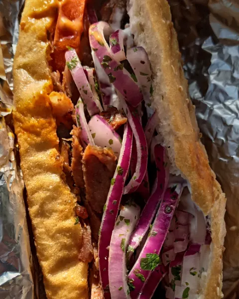
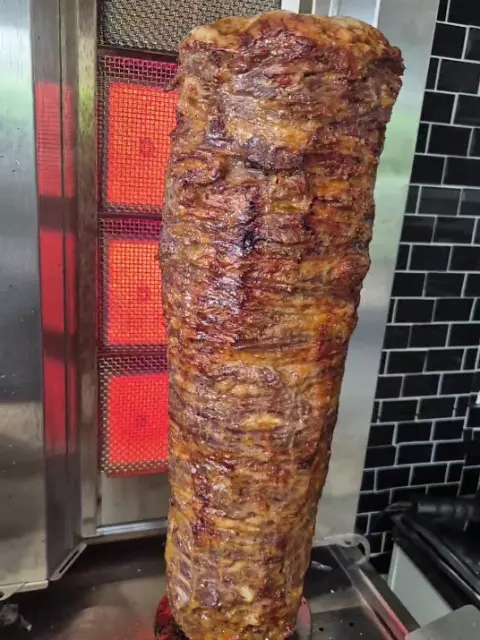
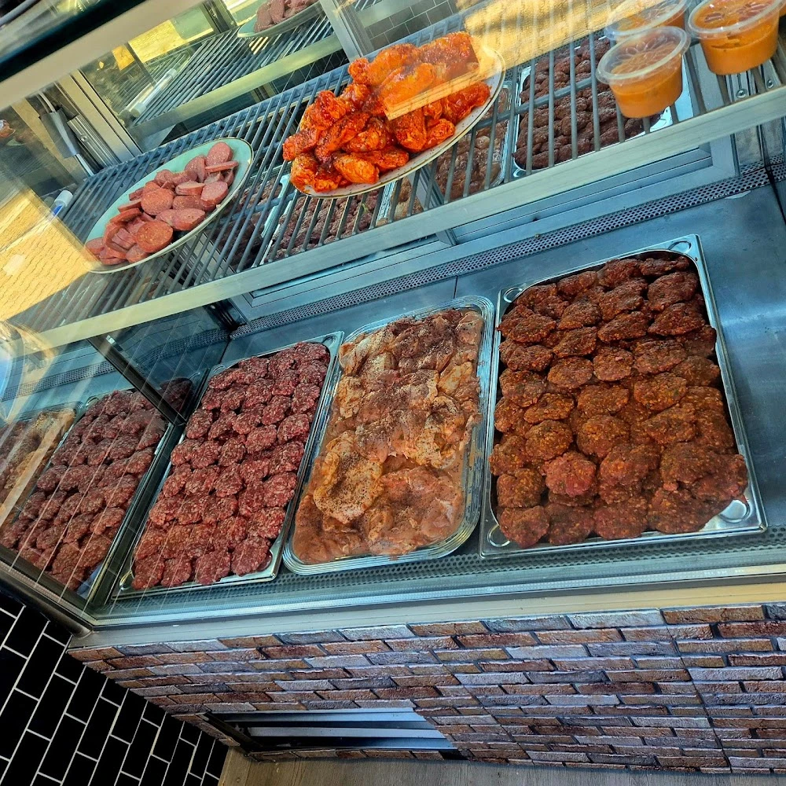
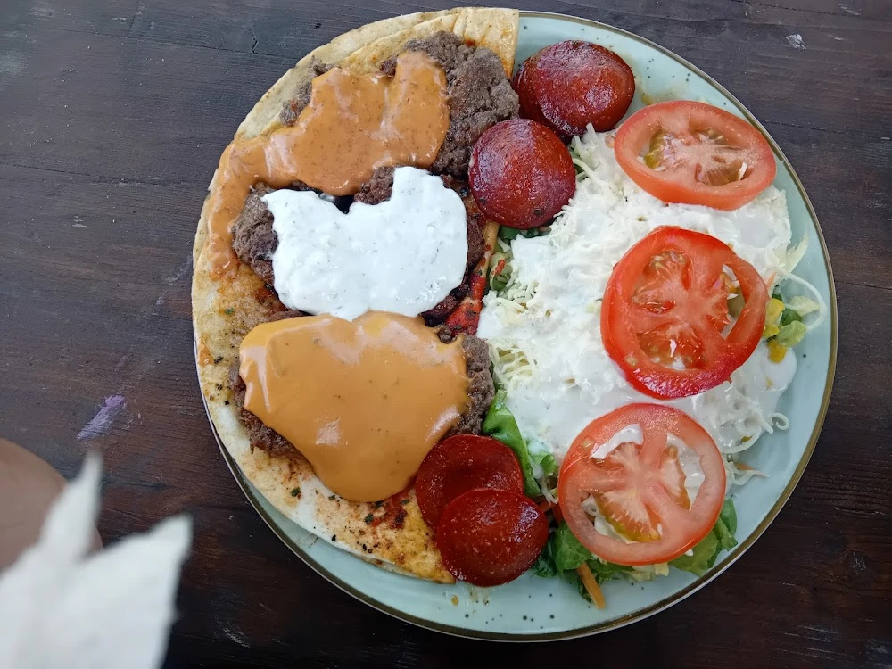
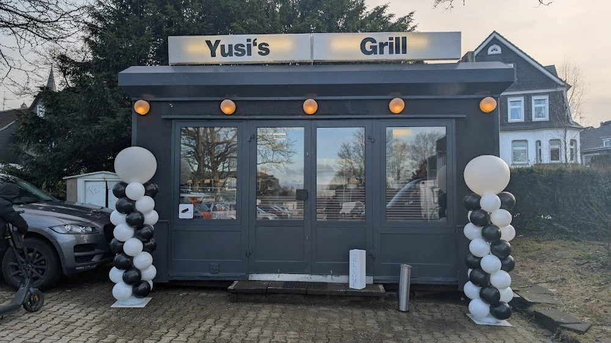

Für die ganze Runde
Grillplatte für 4 Personen
Rinderfrikadellen, Geflügelwurst, Knoblauchwurst, gebratene Zwiebeln und Paprika, Pommes und selbst mariniertes Tortillabrot.
64,00 €Yaprak Döner, Köfte, Sucuk und Falafel. Frisch vom Grill am Hohenfuhrplatz.
Seit dem 31. Januar 2025 im ehemaligen Gensters Speisewagen.
Kalbsscheibenfleisch vom Spieß. Im Brot, als Spezial mit Pommes, auf dem Teller oder im Salat.


Köfte und Sucuk siehst du, bevor du bestellst. Vom Grill kommt es heiß ins Brot, auf den Teller oder zum Mitnehmen.

Sucuk Soßen Köfte

Hohenfuhrstraße 11
42477 Radevormwald
Du holst ab, wir liefern über Lieferando. Wenn es eilig ist, ruf einfach an.
Öffnungszeiten: siehe Tabelle
| Montag | Ruhetag |
|---|---|
| Dienstag | 12:00 – 20:00 |
| Mittwoch | 12:00 – 20:00 |
| Donnerstag | 12:00 – 20:00 |
| Freitag | 14:00 – 20:00 |
| Samstag | 14:00 – 20:00 |
| Sonntag | 14:00 – 20:00 |
Zeiten laut Lieferando. An Feiertagen kann es abweichen, im Zweifel kurz anrufen.
„Sehr lecker, netter Lieferant.“
Lieferando-Kunde, 30. September 2026
Preise im Laden. Bei der Bestellung über Lieferando können sie abweichen. Zu Allergenen und Zusatzstoffen fragt uns direkt.
Kalbsscheibenfleisch, Salat, Soßen
8,00 €Rinderhack, Zwiebeln, Tomaten, Soßen
8,00 €Knoblauchwurst, Salat, Soße
8,00 €Falafel, Salat, Soßen
8,00 €Yaprak Döner, Salat, Soße und Pommes
11,00 €Köfte, karamellisierte Zwiebeln, Knoblauchwurst, gebratene Paprika, Salat, Soßen
11,00 €Sucuk, gebratene Zwiebeln, Paprika und Pommes
11,00 €Falafel, karamellisierte Zwiebeln, gebratene Paprika, Pommes
11,00 €Frikadellen, Knoblauchwurst, Pommes, Salat und Yaprak-Fleisch
19,00 €Yaprak Döner mit Pommes und Salat
12,00 €Rinderfrikadellen, Salat, Pommes, selbst mariniertes Tortillabrot, Soßen
12,00 €Knoblauchwurst, Pommes, Salat, mariniertes Tortillabrot
11,00 €Falafel, Pommes, Salat, Soßen
11,00 €Sucuk, 3× Falafel, Yaprak Döner, Pommes und Salat
18,00 €Für die ganze Runde
Rinderfrikadellen, Geflügelwurst, Knoblauchwurst, gebratene Zwiebeln und Paprika, Pommes und selbst mariniertes Tortillabrot.
64,00 €Mit Zwiebeln, Ketchup und Mayo
4,00 €Mozzarella, Ziegenkäse, Mais, Eisbergsalat, rote und gelbe Paprika, Tomaten
8,00 €Yaprak Döner, Mozzarella, Mais, Eisbergsalat, Paprika, Tomaten
10,00 €Rinderfrikadellen, gebratene Paprika, karamellisierte Zwiebeln, Mais, Grünsalat, Tortilla-Wrap
12,00 €Die Bestellung läuft über Lieferando.de.